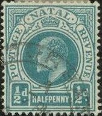
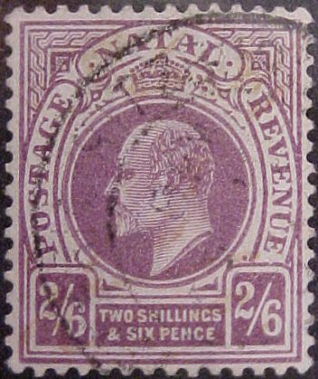
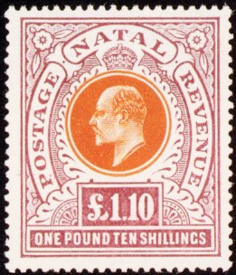
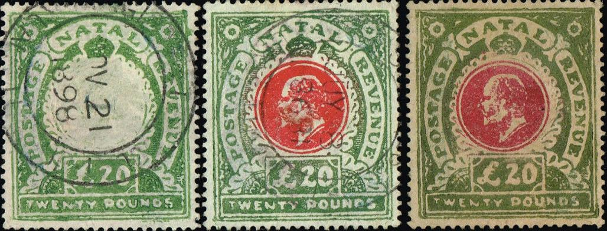
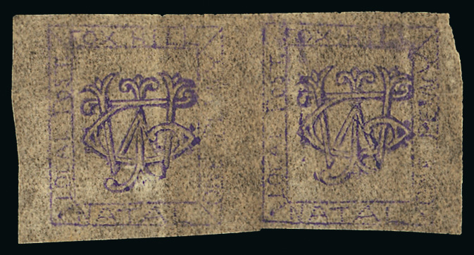

Return To Catalogue - Natal 1857-1901 - Natal 1874 issue - South Africa
Note: on my website many of the
pictures can not be seen! They are of course present in the
catalogue;
contact me if you want to purchase it.
For issues of Natal from 1857 to 1901 click here, or Natal 1874 issue, click here.


1/2 p green 1 p red 1 1/2 p black and green 2 p green and red 2 1/2 p blue 3 p grey and lilac 4 p brown and red 5 p orange and black 6 p brown and green 6 p lilac (POSTAGE POSTAGE) 1 Sh blue and red 1 Sh black on green (POSTAGE POSTAGE) 2 Sh lilac and green 2 Sh blue and lilac on blue (POSTAGE POSTAGE) 2 Sh 6 p lilac 2 Sh 6 p red and black on blue (POSTAGE POSTAGE) 4 Sh yellow and red
These stamps have perforation 14.
Value of the stamps |
|||
vc = very common c = common * = not so common ** = uncommon |
*** = very uncommon R = rare RR = very rare RRR = extremely rare |
||
| Value | Unused | Used | Remarks |
| Watermark 'CA Crown' (1902) | |||
| 1/2 p | * | c | |
| 1 p | * | c | |
| 1 1/2 p | * | * | |
| 2 p | *** | * | |
| 2 1/2 p | *** | ** | |
| 3 p | *** | * | |
| 4 p | *** | *** | |
| 5 p | *** | *** | |
| 6 p brown and green | *** | *** | |
| 1 Sh blue and red | *** | *** | |
| 2 Sh lilac and green | RR | R | |
| 2 Sh 6 p lilac | RR | R | |
| 4 Sh | RR | RR | |
| Watermark 'Multiple CA Crown' (1904) | |||
| 1/2 p | * | c | |
| 1 p | * | c | |
| 2 p | ** | * | |
| 4 p | *** | ** | |
| 5 p | *** | *** | |
| 6 p lilac | *** | *** | 1908 "POSTAGE POSTAGE" |
| 1 Sh blue and red | RR | *** | |
| 1 Sh black on green | R | *** | 1908 "POSTAGE POSTAGE" |
| 2 Sh lilac and green | RR | RR | |
| 2 Sh blue and lilac on blue | R | R | 1908 "POSTAGE POSTAGE" |
| 2 Sh 6 p lilac | RR | RR | |
| 2 Sh 6 p red and black on blue | RR | R | 1908 "POSTAGE POSTAGE" |
Larger size

(Last two images obtained from http://www.sandafayre.com )
5 Sh red and blue 5 Sh red and green on yellow (POSTAGE POSTAGE) 10 Sh brown and red 10 Sh red on green (POSTAGE POSTAGE) 1 Pound blue and black 1 Pound black and lilac on red (POSTAGE POSTAGE) 1.10 Pound violet and green 1.10 Pound lilac and orange 5 Pounds black and lilac 10 Pounds orange and green 20 Pounds green and red
The higher values were mainly used fiscally.
Value of the stamps |
|||
vc = very common c = common * = not so common ** = uncommon |
*** = very uncommon R = rare RR = very rare RRR = extremely rare |
||
| Value | Unused | Used | Remarks |
| Watermark 'CC Crown' (1902) | |||
| 5 Sh red and blue | RR | *** | |
| 10 Sh brown and red | RR | RR | |
| 1 Pound blue and black | RR | RR | |
| 1.10 Pound violet and green | RRR | RR | |
| 5 Pounds | RRR | RRR | |
| 10 Pounds | RRR | RRR | |
| 20 Pounds | RRR | RRR | |
| Watermark 'Multiple CA Crown'
(1904), Inscription "POSTAGE REVENUE" |
|||
| 1.10 Pound lilac and orange | RRR | RRR | |
| Watermark 'Multiple CA Crown'
(1908), Inscription "POSTAGE POSTAGE" |
|||
| 5 Sh red and green on yellow | RR | RR | |
| 10 Sh red on green | RR | RR | |
| 1 Pound black and lilac on red | RRR | RR | |
A 1 p stamp can be found with the overprint "NOT FOR USE", this originates from a booklet issued in 1907, one stamp in this booklet was overprinted in this way. This stamp is rare in this condition:
("NOT FOR USE" overprint)
Typical railway cancels.
A stamp which was used for fiscal purposes with a forged postal
cancel applied to it.
Primitive forgeries exists of the higher values:

Primitive forgeries.
1/2 p green 1 p red 2 p green and red 3 p grey and lilac 6 p brown and green 1 Sh blue and red
Value of the stamps |
|||
vc = very common c = common * = not so common ** = uncommon |
*** = very uncommon R = rare RR = very rare RRR = extremely rare |
||
| Value | Unused | Used | Remarks |
| 1/2 p | *** | *** | Watermark 'Multiple CA Crown' |
| 1 p | *** | ** | Watermark 'Multiple CA Crown' |
| 2 p | R | R | Watermark 'Multiple CA Crown' |
| 3 p | R | R | |
| 6 p | RR | RR | |
| 1 Sh | RR | RR | |
"HALFPENNY" brown and "ONE PENNY" red.
Elliptic design 1 p red.
I've also seen a 1 1/2 p grey cut with the image of Queen Victoria (ellipsoidal shape).
(Wrapper, reduced sized image)
What is this? A very small sized 1 p cut with a circle with Queen
Victoria inside.
Example, inscription "NATAL REVENUE" (issued from 1882 onwards):
The following values exist: 1 p lilac, 4 p lilac, 6 p lilac, 9 p lilac, 1 Sh lilac and red, 4 Sh lilac and red, 5 Sh lilac and red, 6 Sh lilac and red, 9 Sh lilac and red, 1 Pound lilac and blue, 1 Pound green, 1.10 Pound lilac and blue, 5 Pounds green and red, 10 Pounds green and blue and 20 Pounds green and black. A surcharged stamp 1 Sh on 4 Sh lilac and red exists as well.
As postage stamps of King Edward, but inscription "REVENUE REVENUE":
Several values exist ranging from 6 p to 20 Pounds.
In 1881 special telegraph stamps were issued for Natal, they have the face of Queen Victoria and the inscription "NATAL TELEGRAPHS". The following values were issued: 1 p brown, 3 p red, 6 p olive, 1 Sh green, 2 Sh violet, 5 Sh blue, 10 Sh brown(?), 1 Pound brown and 5 Pounds orange.
There also exist some fiscal stamps with overprint "TELEGRAPH" and surcharge (5 values, issued in 1902). I have no pictures of those right now.

Prepaid Parcel NRC (Natal Government Railway); no country name
indicated; 1 p violet, 3 p green, 6 p violet.
"N G R PARCELS STAMP."
Stamps with inscription "N G R PARCELS STAMP." are also parcel stamps from the Natal Government Railways. I have seen the values 1 p green, 3 p green, 6 p green, 9 p green, 9 p grey, 1 Sh light blue, 2 Sh red, 5 Sh lilac. Similar stamps, but with inscription "S A R" (South African Railways) or "C S A R" (Central South African Railways) were issued for South Africa and "C G R" for Cape of Good Hope.
The forger Fournier made a forged cancel "POINT NATAL A MY 23 03" as shown in the next picture taken from a 'The Fournier album of philatelic forgeries':
If anybody knows on what stamp(s) this forged cancel was used, please contact me! I presume it was used on cleaned up fiscally used stamps. I've seen a similar cancel on the 5 Sh Queen Victoria stamp:
Genuine(?) Point Natal cancel.
Thought to be bogus stamps for a long time, they appear to have been genuine. However, no used stamps are known to exist. There are three types:
Type 1: with E R / 1 D in the center and "NATAL" on top and "FOX HILL" at the bottom. Printed in blue.
Type 2:

T.W.J. monogram in the center, "FOX HILL" on top,
"NATAL" below, "LOCAL POST" on the left,
"ONE PENNY" on the right. Color of the stamp: purple
Type 3 with a very primitive portrait of King Edward VII and "FOX HILL" on top. Printed in purple color.
{kind=link}
{kind=link}